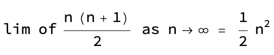

Visualizer for the sum of the first n natural numbers
Arihant Gadgade
Date Published: 9/20/2024
Decided to play around with coding up math visualizations in Mathematica or Manim.
I typically use Mathematica for animations/visualizations, but I want to play around with Manim.
May do Manim in future visualizations.
Sum of first n natural numbers
I've seen this visualization before, and liked it, so I decided to to create it myself in Mathematica.
n=5 case:
n=10 case:
n=100 case:
We see that the stack of squares approaches a right triangle as we’d expect for large n.  Which is the formula for an isosceles right triangle.
I very much like this theorem and especially this visual proof, as we can see how a number theory type problem can be converted into a geometric problem to then be solved and converted back over. Beautiful example of how different areas of math connect.
Wolfram Community link: SumOfFirstNNatNums
Here's the code on GitHub: SumOfFirstNNatNums